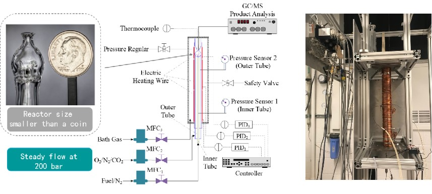
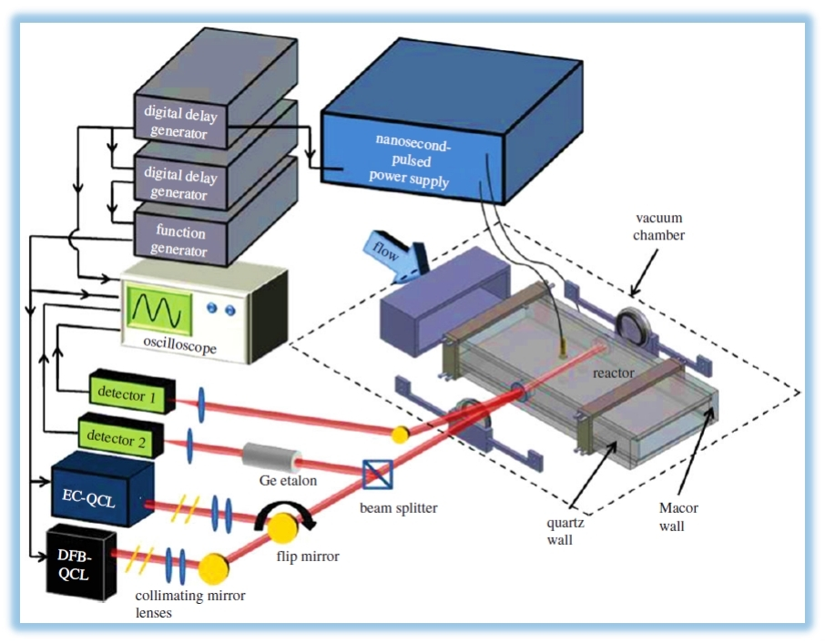

Facility
Reactors
Supercritical Pressure Jet-stirred Reactor
|  |
Plasma-assisted Reactor, Pulsed-heating Reactor
Flow Reactor, Jet-stirred Reactor
Diagnostics
Electron-impact Molecular Beam Mass Spectrometer
Laser Absorption Spectroscopy
|  |
Faraday Rotational Spectroscopy
Gas Chromatography, Ultraviolet Spectrometer
All-fiber photothermal interferometry probe
 |